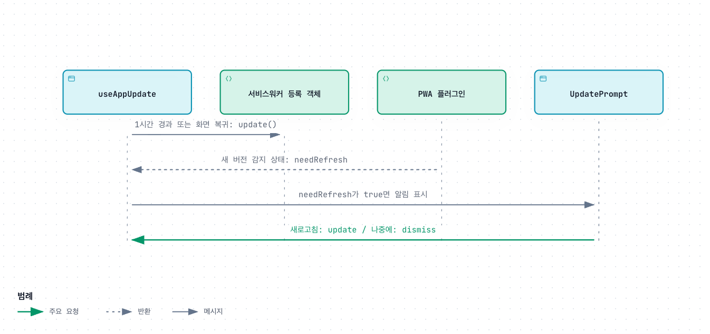
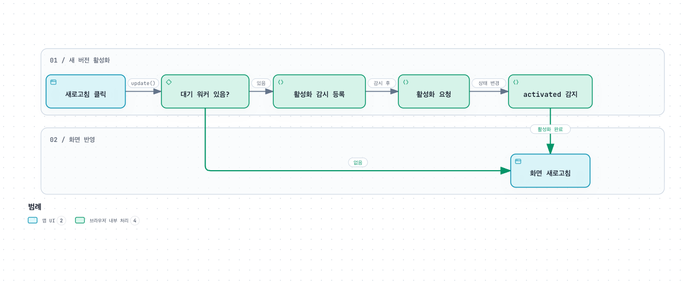

버전 관리와 업데이트
배포한 웹 버전이 브라우저에 도착하고, 사용자의 선택으로 화면에 적용되는 과정을 설명합니다.
이 가이드에서 말하는 버전
Git의 커밋은 배포한 코드의 기준이고, 서비스워커는 브라우저가 새 웹앱 파일을 발견하고 적용하는 수단입니다. main 머지, 플랫폼 배포 완료, 사용자의 화면 갱신은 서로 다른 시점입니다.
| 확인 대상 | 어디서 확인하나요? |
|---|---|
| 배포한 코드 | Cloudflare·Render의 배포 커밋을 Git SHA와 비교합니다. |
| 웹앱의 새 파일 | PWA 플러그인이 서비스워커 업데이트를 감지합니다. |
| 현재 열린 화면에 적용 | 앱의 ‘새 버전이 있어요’ 알림에서 사용자가 새로고침을 선택합니다. |
현재 알림에는 릴리스 번호나 변경 목록을 표시하지 않습니다. package.json의 version 값으로 사용자 업데이트를 비교하거나 Git 태그를 자동 생성하는 구성도 아닙니다. 이 문서는 Git 브랜치 전략보다 배포한 웹 버전을 사용자 화면에 반영하는 흐름을 설명합니다.
새 버전 확인과 알림

- 서비스워커 등록 콜백이 등록 객체를 보관합니다.
- 1시간마다, 또는 문서가 다시 visible 상태가 될 때
registration.update()로 새 서비스워커를 확인합니다. - PWA 플러그인의
needRefresh가 true면 UpdatePrompt가 알림을 표시합니다. - 사용자는 ‘나중에’ 또는 ‘새로고침’을 선택합니다.
registration.update()는 새 파일을 확인하는 호출입니다. 화면을 다시 읽는 window.location.reload()와 다릅니다. 확인 중 네트워크 오류는 무시하고 다음 확인 기회를 기다립니다. 초기 등록·설치에 따른 감지는 PWA 플러그인이 담당합니다.
새로고침을 누른 뒤의 두 경로

대기 중인 서비스워커가 없는 경우
바로 window.location.reload()를 호출합니다. 첫 방문처럼 서비스워커가 아직 화면을 제어하지 않는 경우에도 새로고침 경로가 필요합니다.
대기 중인 서비스워커가 있는 경우
- 대기 워커에
statechange리스너를 먼저 등록합니다. updateServiceWorker(true)로 활성화를 요청합니다.- 해당 워커의 상태가
activated가 되면 화면을 새로고칩니다.
사용자 선택 없이 화면을 강제로 갱신하지 않습니다. 새로고침하면 작성 중인 입력은 사라질 수 있으므로, 알림을 확인한 뒤 필요한 입력을 마치고 적용합니다. ‘나중에’는 현재 알림을 숨기는 선택이며 재확인 주기를 중지하지 않습니다.
배포와 브라우저 적용을 함께 확인하기
- PR의 웹 검사를 확인하고 main에 반영합니다.
- Cloudflare production 배포가 끝났는지, 배포 커밋이 의도한 SHA인지 확인합니다. API 변경도 있다면 Render의 Live 커밋과 새 API 응답을 별도로 확인합니다.
- 기존 버전을 열어 둔 앱으로 돌아와 업데이트 알림을 확인합니다. 등록 이후의 명시적 재확인은 화면 복귀 또는 1시간 주기입니다.
- ‘나중에’를 누르면 현재 화면을 유지하는지 확인합니다.
- 알림의 ‘새로고침’을 선택하고 변경된 화면이 보이는지 확인합니다. 새로 연 탭에서도 같은 변경을 확인합니다.
GitHub Pages 문서는 이 웹앱 서비스워커의 갱신 대상이 아닙니다. 문서는 docs-pages 배포 결과와 게시 URL에서 따로 확인합니다. 플랫폼의 구체적인 절차는 배포·운영 가이드를 따릅니다.
업데이트가 보이지 않을 때
| 상황 | 확인할 것 |
|---|---|
| main은 바뀌었지만 화면은 그대로 | Cloudflare 배포 완료와 실제 배포 커밋을 먼저 확인합니다. |
| 새 버전 알림이 없음 | 서비스워커 등록 상태, 네트워크, 기존 탭에서 화면 복귀 여부를 확인합니다. 알림이 없다는 사실만으로 배포 실패를 단정하지 않습니다. |
| 서비스워커 파일이 오래된 것처럼 보임 | Cloudflare의 _headers와 sw.js의 no-cache 응답을 확인합니다. 개발자 도구에서 등록·대기·활성 워커 상태를 구분합니다. |
| 새 웹 기능만 API 오류 | 브라우저 캐시 외에도 웹/API 배포 시차를 확인합니다. health의 UP만으로 새 API가 반영됐다고 판단하지 않습니다. |
오프라인 API 데이터 사용은 지원하지 않습니다. 캐시 삭제나 서비스워커 해제부터 하기보다는 배포 커밋·응답 헤더·워커 상태를 먼저 기록하면 원인을 추적하기 쉽습니다.
개발 중 검증과 PR #38의 배경
PR #38은 대기 워커 유무에 따른 적용 분기를 보완했습니다. 이번 문서는 그 변경을 현재 코드와 대조해 개발자 가이드로 재편성했으며, 당시 PR의 배포 여부나 강력 새로고침 재현 여부를 새로운 검증 결과로 해석하지 않습니다.
apps/web에서 관련 테스트를 먼저 실행합니다.
npm test -- src/app/useAppUpdate.test.tsx src/app/UpdatePrompt.test.tsx자동 테스트는 확인 주기·화면 복귀·알림 선택·두 적용 분기를 검사합니다. 실제 브라우저의 서비스워커 설치·활성화와 모바일 PWA 동작은 빌드한 앱 또는 배포 환경에서 별도로 확인해야 합니다. Vite 개발 서버만으로 운영 업데이트를 검증했다고 보고하지 않습니다.